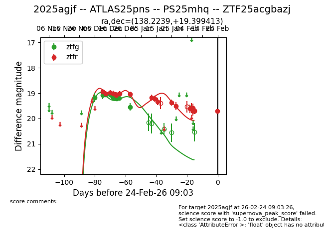
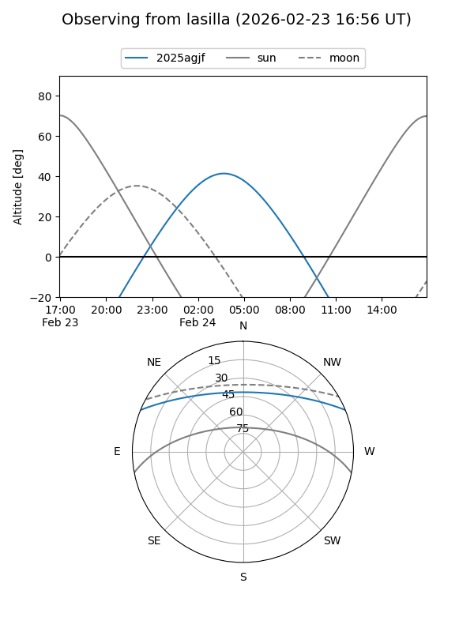
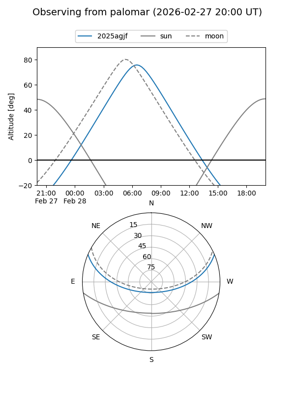
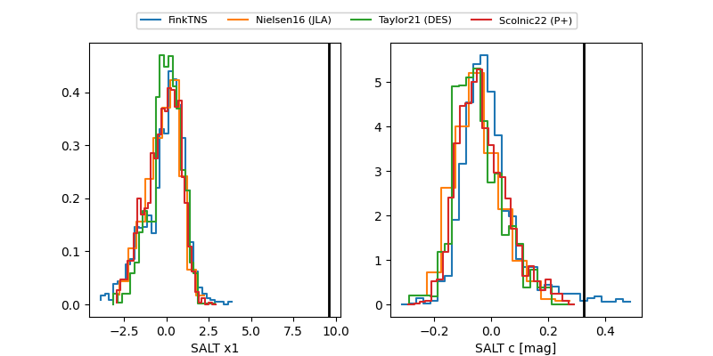

2025agjf
Target 2025agjf at 2025-12-20 13:24
Aliases and brokers:
FINK: fink-portal.org/ZTF25acgbazj
Lasair: lasair-ztf.lsst.ac.uk/objects/ZTF25acgbazj
ALeRCE: alerce.online/object/ZTF25acgbazj
TNS: wis-tns.org/object/2025agjf
YSE: ziggy.ucolick.org/yse/transient_detail/2025agjf
alt names
ZTF25acgbazj (ztf,fink_ztf)
2025agjf (tns,yse)
Coordinates:
equatorial (ra, dec) = 138.2238,+19.39948
equatorial (HMS+DMS) = 09:12:53.71,+19:23:58.11
galactic (l, b) = (209.4588,+39.59176)
Flags:
Photometry:
last atlaso=19.01, ztfg=19.22, ztfr=19.07
2 atlaso, 6 ztfg, 5 ztfr detections
Lightcurve

Visibility


Additional plots
